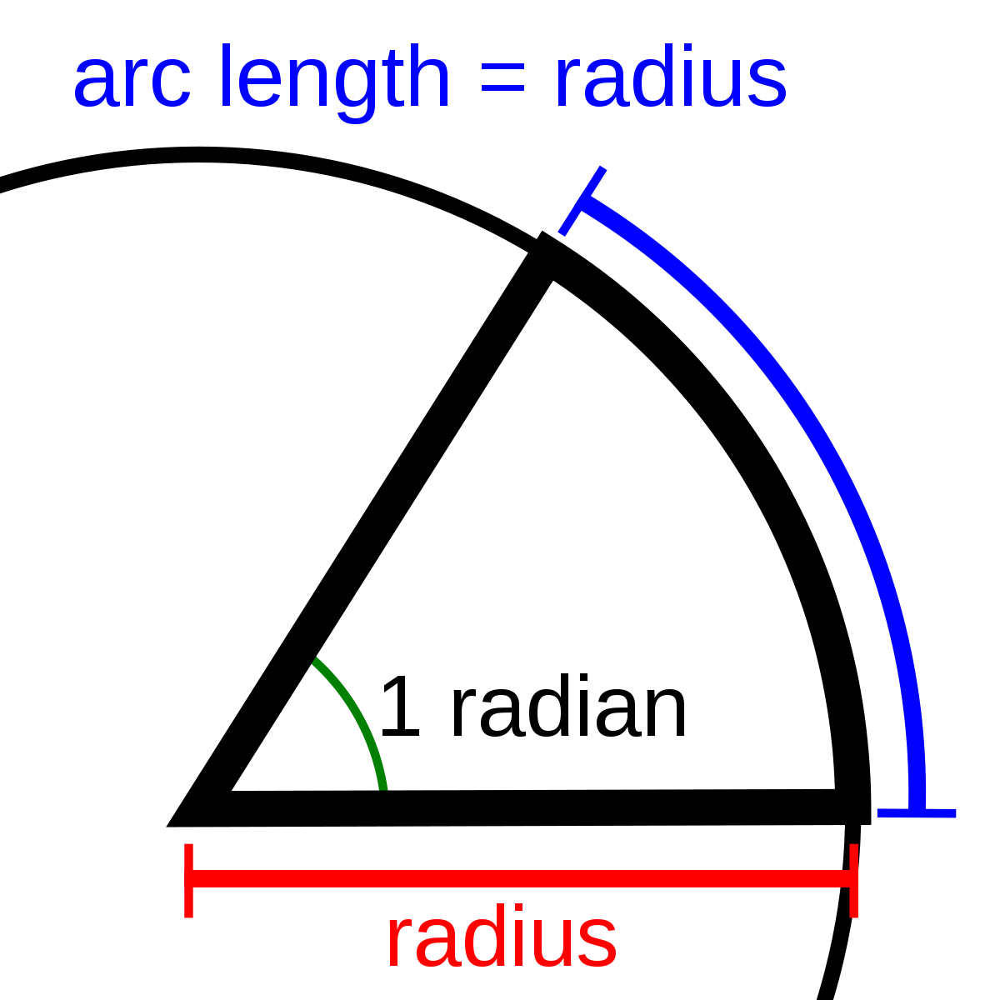

You should already know the basics of trigonometry by this point. You know what sine is, you know what cosine is, tangent, degrees, and also that sin²+cos²=1.
Degrees suck ass, let's get rid of those idiots and introduce radians. The definition of a radian goes like this:
 From https://simple.wikipedia.org/wiki/RadianIn a circle, 1 radian is the middle angle where the arc length is equal to the radius. This angle in radians is thus equal to arc length divided by radius. Take a circle with a radius of 1. If the middle angle is 360°, the arc radius will become 2pi (circumference=2*r*pi). Thus, this angle in radians is 2pi/1, or just 2pi. That gives us an easy conversion:$$\alpha_{radians}=\alpha_{degrees}⋅\frac{2\pi}{360°}$$Thus, 360° becomes 2π, 180° becomes π, 90° becomes π/2, and so on...
Logically, this also means that arc length is equal to the product of radius and the angle in radians.
Take a circle where the middle is positioned at (0,0) and the radius is 1.
Remember the simple rule you learned before for right triangles? Let's take a look:
Sine = opposite side / hypotenuse, so in this case (hypotenuse being the radius of 1), the sine of the angle A is equal to the length of the opposite side. That is the same as the height of the point where the angle crosses the circle.
Cosine = adjacent side / hypotenuse, so in this case (hypotenuse being the radius of 1), the cosine is equal to the length of the adjacent side. That is the same as the horizontal distance to that same point.
In other words, the coordinates of our point are (cos(A),sin(A)).
Finally there is the tangent. On the drawing I have drawn a part of the x=1 graph in orange. If you take the angle line and continue it until it crosses this line, you know what the tangent of the angle is. We can spot another right triangle in this drawing, with one side being the radius, another side being the green line, and the other side being orange. By definition, tangent = opposite side / adjacent side. Since the adjacent side is the radius of 1, the tangent of A is equal to the opposite side, so the height of the orange line. In other words, the coordinates of the top of the orange line are (1,tan(A)).
No, this does not mean the angles are having romantic relations. It means certain angles are related to eachother, and we can discuss their attributes.
Supplementary angles are angles of which the sum is 180° or π radians. In other words, if one angle is A, the other angle is π-A.
On this beautiful drawing you can see two supplementary angles A and B. We know their coordinates are (cos(A),sin(A)) and (cos(B),sin(B)) respectively. We can derive their relations by just looking at the angles. It is clear that the height is the same, so the sine of these two angles is equal. Next, we also tell that the cosine of A is the opposite of the cosine of B. Finally, the tangents are also opposite, as seen on the drawing.$$sin(\pi-\alpha)=sin(\alpha)$$ $$cos(\pi-\alpha)=-cos(\alpha)$$ $$tan(\pi-\alpha)=-tan(\alpha)$$
Opposite angles are opposite, what more do you want.
Let's look at the drawing again. This time, we can tell the cosine is the same, the sine is opposite, and the tangent is also opposite.$$sin(\alpha)=-sin(-\alpha)$$ $$cos(\alpha)=cos(-\alpha)$$ $$tan(\alpha)=-tan(-\alpha)$$
Anti-supplementary angles are a bit different. If you take an angle A, its anti-supplementary angle would be π+A.
We can tell that the sine and cosine are both opposite, but the tangent is equal this time.$$sin(\alpha)=-sin(π+\alpha)$$ $$cos(\alpha)=-cos(π+\alpha)$$ $$tan(\alpha)=tan(π+\alpha)$$
Complementary angles have a sum of 90° or π/2 radians.
This one is harder to notice by just looking, but the cosine of the first angle is equal to the sine of the second one, and the sine of the first angle is equal to the cosine of the second one. In other words, the green lines (indicating the cosine of alpha AND the sine of π/2 - alpha) are the same length, and the yellow lines (indicating the sine of alpha AND the cosine of π/2 - alpha) are also the same length.$$sin(\alpha)=cos(\frac{π}{2}-\alpha)$$ $$cos(\alpha)=sin(\frac{π}{2}-\alpha)$$We can also derive the tangent like so:$$tan(\frac{\pi}{2}-\alpha)=\frac{sin(\frac{\pi}{2}-\alpha)}{cos(\frac{\pi}{2}-\alpha)}=\frac{cos(\alpha)}{sin(\alpha)}=cot(\alpha)$$
Let's analyze this function.
The domain of the function (what x values can be inputted) is equal to all real numbers.
The range of the function (what y values can be obtained) is any value in the interval [-1,1]. This is true because the sine can never be equal to a number lower than -1 or higher than 1.
The period of this function (the distance between repeating segments) is 2π. This means that the function repeats itself after every 2π of distance.
This function has an infinite amount of zeros. There is one at x=0, there is one at x=π, and so on to infinity. You can see this on a unit circle too: at these values, the height of your angle line is 0, the sine of the angle is 0. So, we can say the zeros are k*π (with k being an integer, so ...,-2, -1, 0, 1, 2, ...).
Next is cosine! If you look closely, you might be able to spot something. This is the same as the sine function, but shifted right/left a bit. Remember complementary angles? For complementary angles, the sine is the cosine and vice versa. That's why the cosine function is just the sine function shifted π/2 to the left/right.
The domain is thus also every real number.
The range is also [-1,1].
The period is also 2π.
The zeros this time are π/2+k*π (with k any integer).
Look at this wonky fucker! First off, you can tell this function has points with no existing function values. To be more specific, at π/2 + k*π. There is a simple explanation for this. Look at the unit circle and imagine an angle of π/2. It has no tangent, because if you continue the line to find where it crosses x=1, you'll never find a crossing. The two lines are parallel and never cross.
The domain is every real number except π/2 + k*π (with k any integer).
The range is every real number.
The period is π this time, which you can also derive from looking at the unit circle. Or, you could remember that anti-supplementary angles have an equal tangent.
The zeros are at k*π (with k any integer).
We'll now be exploring how we can transform the basic function of f(x)=sin(x) in 4 different ways and how we can recognize these transformations on a graph.
The first transformation is multiplying the entire function by a value (a). Let's say that value is 2, the graph looks like this:
The range of the graph is now [-2,2], which you could've predicted. Changing the a value stretches the graph vertically. If you got shown just the graph without its function you could find the value for a by measuring half of the height of the full graph (or from the middle of the graph to the top or bottom).
Let's set b to something like 3:
Wow, it got squeezed horizontally! This means the period must have changed. If b=1, we have a normal sine function where the period is 2π. That means the period must be equal to 2π/b. In this case b is 3, so the period is 2π/3, which is indeed the case!
Let's say c is 1.
Look at that! The graph has been moved horizontally. More specifically, 1 to the right. The reason it says -c and not +c is because it makes more sense that a positive c moves the graph to the right.
Let's say d is 3.
Unsurprisingly, the graph has moved upwards 3 spaces. This is the most logical transformation.
If you put everything together, you might have something like this:
We can tell that a is equal to 2 because the full height of the graph is 4. We can see that the period is π/2, so that means b is 4 (remember that period = 2π/b). c and d are probably the hardest to pinpoint. To find them, try to look for the point that was originally at (0,0). That is a point in the middle of the graph's height, at a section that is going up. We're looking for the one closest to the origin. On this graph, that would be the point (1,3). It tells us the exact values of c and d, which are 1 and 3 respectively - I am aware that there is a different point like this on the left of the y-axis, but its values are weird decimals.
Let's prove this thing, it's quite long.
On this image, the coordinates of Q are (cos(β),sin(β)) and the coordinates of P are (cos(α),sin(α)).
We're gonna try to calculate the length of PQ (grey line) using two methods.
First, we use the cosine rule.$$|PQ|^{2}=|OP|^{2}+|OQ|^{2}-2⋅|OP|⋅|OQ|⋅cos(\alpha-\beta)$$OP and OQ are radii of the circle.$$|PQ|^{2}=2-2⋅cos(\alpha-\beta)$$
The second method involves using the distance formula:$$|PQ|^{2}=(cos(\alpha)-cos(\beta))^{2}+(sin(\alpha)-sin(\beta))^{2}$$We solve this like so...$$|PQ|^{2}=cos^{2}(\alpha)-2cos(\alpha)cos(\beta)+cos^{2}(\beta)+sin^{2}(\alpha)-2sin(\alpha)sin(\beta)+sin^{2}(\beta)$$Now use the main formula sin²+cos²=1 a few times...$$|PQ|^{2}=2-2(cos(\alpha)cos(\beta)-sin(\alpha)sin(\beta))$$And now we combine the two methods we used:$$|PQ|^{2}=2-2⋅cos(\alpha-\beta)$$ $$|PQ|^{2}=2-2(cos(\alpha)cos(\beta)-sin(\alpha)sin(\beta))$$Which means that...$$cos(\alpha-\beta)=cos(\alpha)cos(\beta)-sin(\alpha)sin(\beta)$$And we're finished!
We can write it like this:$$cos(\alpha-(-\beta))=cos(\alpha)cos(-\beta)+sin(\alpha)sin(-\beta)$$Opposite angles have equal cosines and opposite sines:$$cos(\alpha+\beta)=cos(\alpha)cos(\beta)-sin(\alpha)sin(\beta)$$
For this we'll use complementary angles.$$sin(\alpha-\beta)=cos(\frac{\pi}{2}-(\alpha-\beta))$$ $$sin(\alpha-\beta)=cos((\frac{\pi}{2}-\alpha)+\beta)$$ $$sin(\alpha-\beta)=cos(\frac{\pi}{2}-\alpha)⋅cos(\beta)-sin(\frac{\pi}{2}-\alpha)⋅sin(\beta)$$Complementary relations go brrrrrrr:$$sin(\alpha-\beta)=sin(\alpha)⋅cos(\beta)-cos(\alpha)⋅sin(\beta)$$
We can write it like this:$$sin(\alpha-(-\beta))=sin(\alpha)⋅cos(-\beta)-cos(\alpha)⋅sin(-\beta)$$ And we once again use opposite relation rules to get:$$sin(\alpha+\beta)=sin(\alpha)⋅cos(\beta)+cos(\alpha)⋅sin(\beta)$$
Simple, but also not:$$tan(\alpha-\beta)=\frac{sin(\alpha-\beta)}{cos(\alpha-\beta)}$$ $$=\frac{sin(\alpha)cos(\beta)-cos(\alpha)sin(\beta)}{cos(\alpha)cos(\beta)+sin(\alpha)sin(\beta)}$$ $$=\frac{\frac{sin(\alpha)cos(\beta)-cos(\alpha)sin(\beta)}{cos(\alpha)cos(\beta)}}{\frac{cos(\alpha)cos(\beta)+sin(\alpha)sin(\beta)}{cos(\alpha)cos(\beta)}}$$ $$=\frac{\frac{sin(\alpha)}{cos(\alpha)}-\frac{sin(\beta)}{cos(\beta)}}{1+\frac{sin(\alpha)}{cos(\alpha)}⋅\frac{sin(\beta)}{cos(\beta)}}$$ $$=\frac{tan(\alpha)-tan(\beta)}{1+tan(\alpha)⋅tan(\beta)}$$
We'll use the same tactic once more:$$tan(\alpha-(-\beta))=\frac{tan(\alpha)-tan(-\beta)}{1+tan(\alpha)⋅tan(-\beta)}$$ $$tan(\alpha+\beta)=\frac{tan(\alpha)+tan(\beta)}{1-tan(\alpha)⋅tan(\beta)}$$
These are just results of the sum and difference formulas, so let's get them out of the way.
$$sin(2\alpha)=sin(\alpha+\alpha)=sin(\alpha)⋅cos(\alpha)+cos(\alpha)⋅sin(\alpha)=2sin(\alpha)cos(\alpha)$$
$$cos(2\alpha)=cos(\alpha+\alpha)=cos(\alpha)⋅cos(\alpha)-sin(\alpha)⋅sin(\alpha)=cos^{2}(\alpha)-sin^{2}(\alpha)$$There are also these possibilities, thanks to the general formula we know and love:$$cos(2\alpha)=cos^{2}(\alpha)-sin^{2}(\alpha)=1-2sin^{2}(\alpha)$$ $$cos(2\alpha)=cos^{2}(\alpha)-sin^{2}(\alpha)=2cos^{2}(\alpha)-1$$
Haha that's funny these formulas are named after the funny yellow men- let's prove the following:$$sin(x)+sin(y)=2sin(\frac{x+y}{2})cos(\frac{x-y}{2})$$First we take two things we already know to be true:$$sin(\alpha+\beta)=sin(\alpha)⋅cos(\beta)+cos(\alpha)⋅sin(\beta)$$ $$sin(\alpha-\beta)=sin(\alpha)⋅cos(\beta)-cos(\alpha)⋅sin(\beta)$$We put those together:$$sin(\alpha+\beta)+sin(\alpha-\beta)=2sin(\alpha)cos(\beta)$$ $$sin(\alpha+\beta)-sin(\alpha-\beta)=2cos(\alpha)sin(\beta)$$Next, let's define the following:$$\alpha+\beta=x$$ $$\alpha-\beta=y$$We can solve for α and β:$$\alpha=\frac{x+y}{2}$$ $$\beta=\frac{x-y}{2}$$Put those into the things we got earlier to get the results:$$sin(x)+sin(y)=2sin(\frac{x+y}{2})cos(\frac{x-y}{2})$$ $$sin(x)-sin(y)=2cos(\frac{x+y}{2})sin(\frac{x-y}{2})$$You can also do this with cosine, which gives you these formulas:$$cos(x)+cos(y)=2cos(\frac{x+y}{2})cos(\frac{x-y}{2})$$ $$cos(x)-cos(y)=-2sin(\frac{x+y}{2})sin(\frac{x-y}{2})$$You can prove these in the exact same way as sine, which is why I won't show that here.
Inverse trigonometric functions are just the inverse of sine, cosine, and tangent. We call these arcsine, arccosine, and arctangent.
If sin(π/2)=1, that means arcsin(1)=π/2. But hold on, I already hear the smart people yelling at me. Aren't there infinite solutions to arcsin(1)? You would be right, unless we limit the domain.
As you can see here, graphing a part of y=arcsin(x) shows us that this is not a function - remember that functions cannot have multiple y values per x value. That's why, for sine, we limit the domain to [-1,1], which limits the range to [-π/2,π/2]. That way, every possible sine value is included once and we get this graph:
Similarly, to get every cosine value accounted for in arccos, we'll limit the domain to [-1,1], which limits the range to [0,π] and we get this graph:
Finally, we can do the same for arctangent. We want every possible tangent value once, from [-∞,+∞], which limits the range to ]-π/2,π/2[ - the brackets are open since π/2 and -π/2 don't have real tangent values. The graph looks like this:
And that's all for trigonometry! In the next course, we'll be covering exponential and logarithmic functions. Once that is done we can start deriving all these new beautiful functions we've learned...